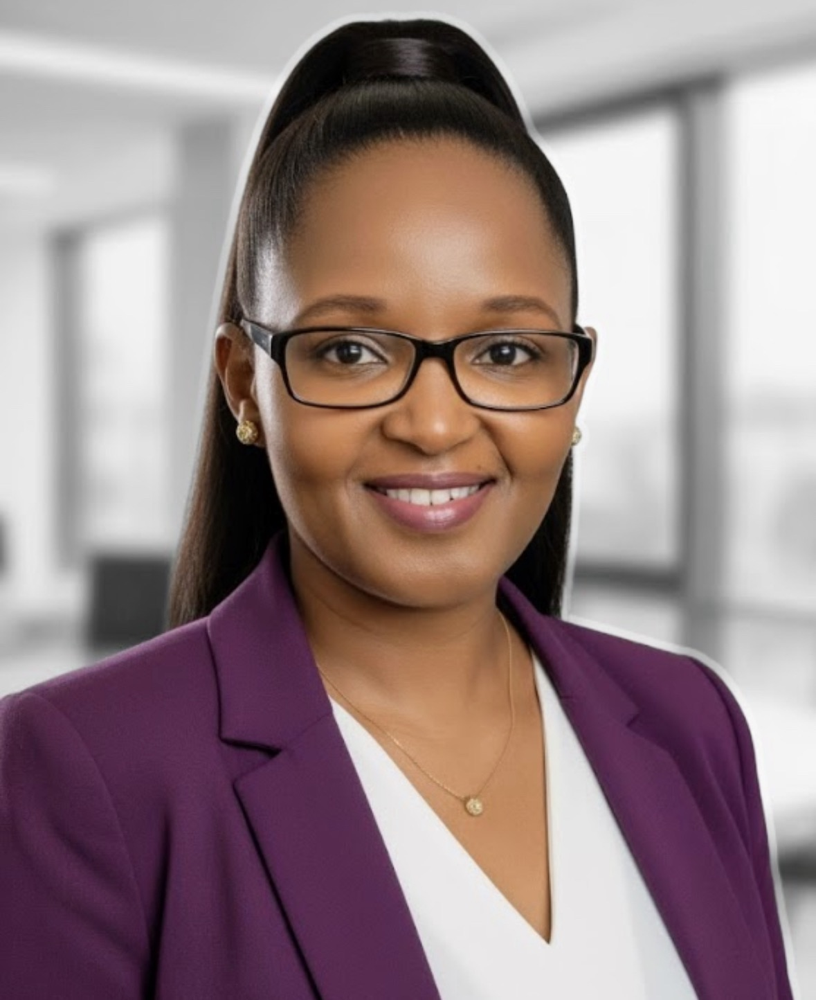

01 / CYBER LEADERSHIP AND ENGINEERING
Noureen Njoroge
CO-FOUNDER
Noureen helps boards, executives, and security teams turn emerging AI risk into practical decisions, durable operating models, and measurable resilience.
She brings more than 15 years of enterprise security leadership across public and private sectors. At Nike, she led global cyber threat intelligence and enterprise threat management teams, advising executive leadership and the board through high-severity incidents. Her integrated threat-management work reduced mean time to detect from four days to one and mean time to respond from 36 hours to four.
Previously, Noureen built Cisco’s cyber threat analytics service from eight pilot clients into a $25M annual business serving more than 45 enterprise clients. Her board and advisory work spans cybersecurity governance, responsible AI adoption, and emerging-technology strategy.
Noureen earned an Executive MBA from Harvard and a B.S. in Information Technology from the University of Massachusetts. Her advanced study spans agentic AI, adaptive leadership, AI strategy, and cybersecurity leadership at Harvard Business School, MIT, and UC Berkeley, and she holds the CISM credential.
- Two-time Cybersecurity Woman of the Year
- Cisco Distinguished Engineer & Cybersecurity Champion
- President and Co-founder, North Carolina Women in Cybersecurity
- Executive MBA, Harvard · B.S. Information Technology, UMass · CISM